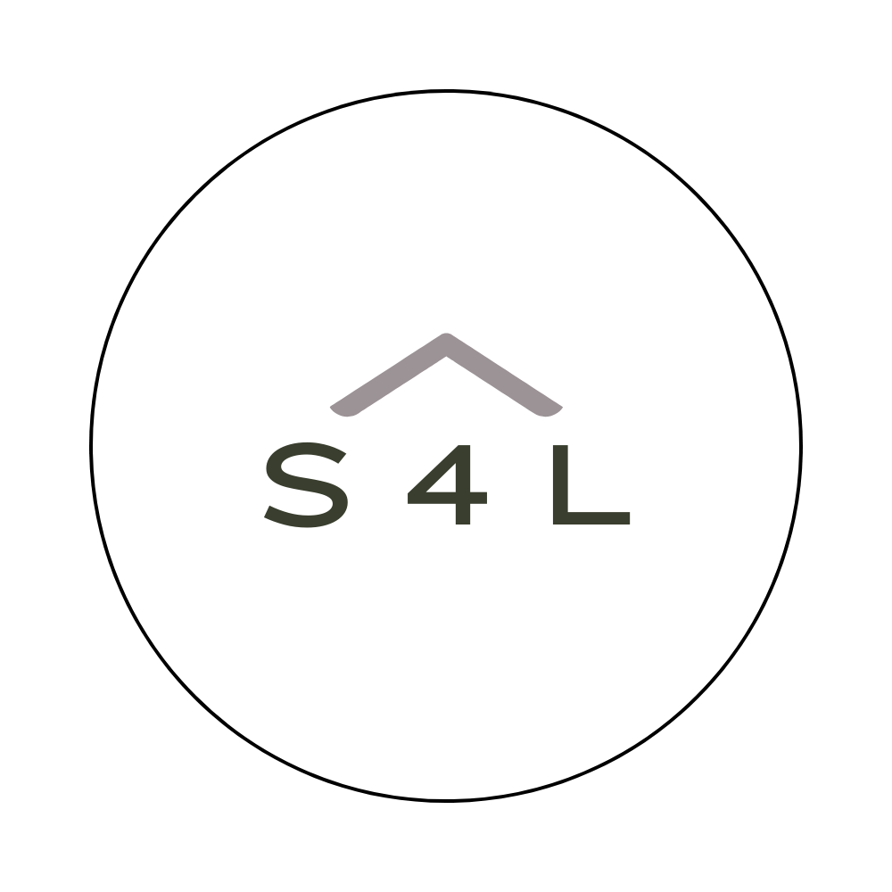

Change
Support people as they adjust to new realities, transitions, and unexpected shifts.

Stamena4LifeSeminars & Groups
An interactive teaching experience for groups navigating change, challenge, crisis, trauma, grief, or community loss.
For Communities
The C-3 Challenge creates space for people to name pain, understand responses to change, and begin moving toward healing with practical faith-centered tools.
It is built for churches, schools, ministries, businesses, and communities that need a structured way to respond after difficult seasons or shared loss.
Support people as they adjust to new realities, transitions, and unexpected shifts.
Equip teams and families to work through hard conversations without shutting down.
Bring clear language and practical support to moments that feel overwhelming.
Create a shared healing experience for people who need to process together.
The C-3 Challenge is currently listed at $1,000, plus travel, lodging, and meals. A minimum of 20 participants is requested.
Bring C-3 to your group: request details for your church, school, ministry, or organization.